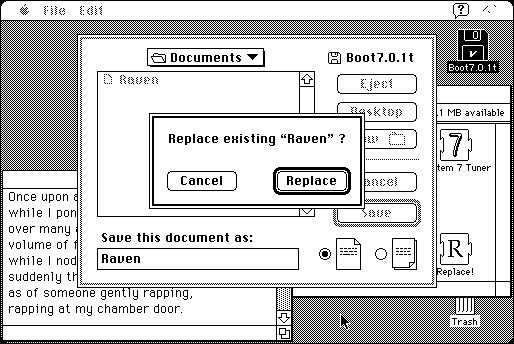

Download
Replace-1.1.1.zip (12K) Replace 1.1.1 repackaged into a zipped hfs disk image and checksum file. The disk image can be mounted with Mini vMac.
Replace-1.1.1.sit.bin (12K) Replace 1.1.1 in the original format.
copyright: James W. Walker
mod date: Jan 3, 2000
license: Freeware
from url :
James Walker’s Mac Stuff
“When you save a file and get the 'Replace existing <filename>?' dialog, this extension will make the Replace button, rather than the Cancel button, be the default. Requires System 7 or later.”

If you find these downloads useful, please consider helping the Gryphel Project, which hosts them.
Here are the md5 checksums for the downloads, signed with Gryphel Key 5:
--------- GRY SIGNED TEXT --------- f25e7109d80a95ff2132d413f21819fd Replace-1.1.1.zip b1bce000460f0b30c262046dbd032c93 Replace-1.1.1.sit.bin ------- BEGIN GRY SIGNATURE ------- Gry/4Xa8CFcUzxdN/GLiVQDl3zQ/Prhcy/R7rLqa+p3i9ZnHYuddeFHEwD5IeSFe 7nwFFQ27RzLKhaYKwbLc6uvNZsKuOMT2RtPU5xKASloijwy/KXzjje66kxgKUHDs HEvsxILW2XxkyzWQ0U8jToDkAtPILdXngFHLaqlcfmGGoOHfrx1Y7gFFb8IcWmiB -------- END GRY SIGNATURE --------